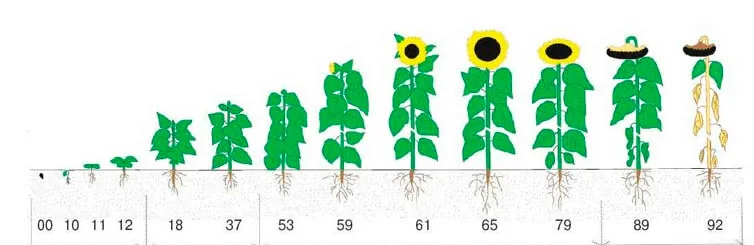
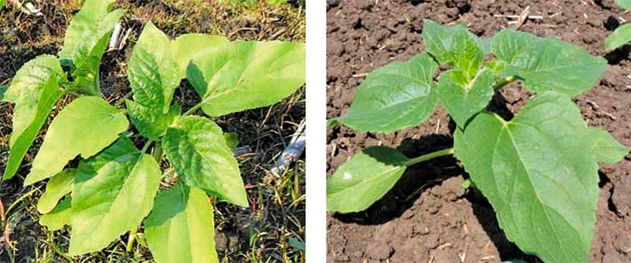

GREENODIN fertilizers for sunflower
GREENODIN sunflower fertilizers are organo-mineral granular fertilizers for growing sunflower based on soil testing. The recommended lines are GREENODIN BLACK and GREENODIN GRAY, with a base rate of 250 kg/ha before primary tillage. The silicon component helps retain moisture, and beneficial bacteria help mobilise nutrients.
Recommended lines
The line is chosen according to soil acidity and composition; fertilizers can be combined.
- Farming system
- Organic and integrated
Thanks to the cumulative effect, the rate is reduced by 20% every year.
| Product | Rate | Spray volume |
|---|---|---|
| Soil treatment | ||
| GREENODIN BLACK or GRAY | 250 kg/ha | |
| Groundfix | 5 L/ha | |
| Seed treatment before sowing | ||
| HelpRost | 2.0 L/t | |
| Mikohelp | 2.0 L/t | |
| Mikofrend | 5.0 L/t | |
| Liposam | 0.4 L/t | |
| 4–6 leaves | ||
| HelpRost/Boron | 1.0 L/ha | |
| Organic-Balance | 0.5 L/ha | |
| Lepidocid | 5.5 L/ha | |
| Bitoxibacillin-BTU | 8.5 L/ha | |
| Fitohelp | 0.7 L/ha | |
| Azotofit-r | 0.3 L/ha | |
| Liposam | 0.3 L/ha | |
| 8–10 leaves (star bud) | ||
| HelpRost/Boron | 1.0 L/ha | |
| Organic-Balance | 0.5 L/ha | |
| Lepidocid | 5.5 L/ha | |
| Actoverm Formula | 5.0 L/ha | |
| Mikohelp | 3.0 L/ha | |
| Azotofit-r | 0.3 L/ha | |
| Liposam | 0.5 L/ha | |
| Budding – flowering | ||
| Humifrend | 0.5 L/ha | |
| Lepidocid | 5.5 L/ha | |
| Actoverm Formula | 5.0 L/ha | |
| Mikohelp | 0.7 L/ha | |
| Liposam | 0.5 L/ha | |
| Crop residues | ||
| GREENODIN BLACK or GRAY | 150 kg/ha | |
| Ecostern | 1.5 L/ha | |
| Sclerocid | 2 L/ha | |
Before using any supporting products, check their current labels and compatibility.
A high-quality sunflower crop with GREENODIN organic fertilizers
A standard sunflower fertilization system includes base soil fertilizer, row fertilizer at sowing, foliar feeding with chelated fertilizers, and incorporating fertilizer into the soil at 18–20 cm, within reach of the roots.
To get results from GREENODIN fertilizers and increase sunflower yield, start with a full soil test for macro- and micronutrients to see which elements are sufficient and which need raising. Then work out the fertilization system and plan how to apply it. The right fertilization system for this crop will help raise productivity and save a great deal of money.
Yield-boosting elements for sunflower
Sunflower yield is planned according to the crop's nutrient requirements. Most of the land used for sunflower in Ukraine is chernozem in the forest-steppe and steppe zones. Yet every cultivated soil has its shortcomings. Most often there is not enough nitrogen in a form sunflower can use, and sometimes not enough phosphorus, potassium or other nutrients. The wide range of GREENODIN organic fertilizers makes it possible to create available forms of the elements sunflower needs on different soils.
Macronutrients
Building sunflower biomass takes a lot of nutrients, kg/t:
| Element | Removed with seed | Removed with by-products | Total |
|---|---|---|---|
| Nitrogen (N) | 28 | 23 | 51 |
| Phosphorus (P₂O₅) | 16 | 14 | 30 |
| Potassium (K₂O) | 24 | 74 | 98 |
| Magnesium (MgO) | 6,6 | 7,4 | 14 |
Below is the removal and uptake of micronutrients by sunflower at a yield of 3 t/ha:
| Element | Seed | Crop residues |
|---|---|---|
| Nitrogen (N) | 84 | 69 |
| Phosphorus (P₂O₅) | 48 | 42 |
| Potassium (K₂O) | 72 | 222 |
| Magnesium (MgO) | 19,8 | 22,2 |
The amounts are determined by the plant's genetics and depend on the availability of nutrients, moisture, temperature, weather and so on. All of this should be taken into account when planning fertilization. GREENODIN fertilizer is designed to replace the nutrients taken up, allowing for the characteristics of five soil types from acidic to alkaline and for sunflower's uneven nutrient uptake, as shown in the figure.

Sunflower has a powerful, deep root system and needs plenty of nutrients at different stages of development. Up to 75% of the nutrients are taken up during seed formation. Silicon combined with the humic and fulvic acids in GREENODIN has a very positive effect on sunflower: stem walls become stronger and shoots and leaves get a richer colour, which together noticeably increase the quantity and quality of the crop.

Nitrogen deficiency symptoms: left — nitrogen-deficient plant, right — healthy plant
In the steppe zone of Ukraine on chernozem soils, available phosphorus and potassium are sufficient but nitrogen is lacking. In the forest-steppe, Polissia and some steppe soils it is the other way round: available phosphorus and potassium are in short supply.
Most nitrogen is taken up from the start of head formation to the end of flowering, potassium from head formation to maturity, and phosphorus from emergence to flowering.
Applying GREENODIN at sowing allows beneficial microorganisms to develop in the sunflower root zone while supplying the crop with nutrients, on top of the humic and fulvic acids already provided.
Important!
Excess nitrogen leads to vigorous vegetative growth, delays the formation of reproductive organs and causes lodging and disease.
Phosphorus is taken up from seedling to flowering. At the start of flowering it accumulates in leaves and stem, later moves into the head, and then into the seed. From head formation to the end of flowering, plants take up 60–70% of their total phosphorus need. A phosphorus shortage hurts seed formation and filling and limits productivity. An optimal soil phosphorus level raises drought tolerance and the oil content of the seed. Phosphorus also matters early in development: plants use it intensively then, and there must be enough.
During ripening, most of the nitrogen and phosphorus taken up ends up in the seed. About 75% of potassium stays in the vegetative organs and about 25% goes to the seed. Potassium supports root development, raises drought tolerance, helps regulate water balance and reduces water loss. Most potassium is used between head formation and ripening. From emergence to head formation, moderate nitrogen and potassium are needed, but phosphorus demand is higher. From head formation to the end of flowering, all nutrients must be in sufficient supply.
Sunflower really does need potassium and can absorb it intensively even from hard-to-dissolve compounds. If available soil potassium is low, the sunflower crop depends on fertilizers.
These tasks are solved by beneficial bacteria activating soil nutrients, so that NPK becomes available to sunflower in the right amounts but is taken up only as needed, preventing excess. And remember that soil supplied with organic potassium holds moisture better. Together, organic silicon and potassium have a cumulative effect, increasing the soil's overall water-holding capacity.
Micronutrients
Micronutrients matter as much as macronutrients for a high sunflower seed yield. Although they are needed in small doses, adding them to the soil noticeably raises yield.
Micronutrient uptake and removal by sunflower per tonne of yield.
| Element | Uptake | Removal |
|---|---|---|
| Copper (Cu) | 17 | 7 |
| Boron (B) | 113 | 23 |
| Iron (Fe) | 209 | 30 |
| Manganese (Mn) | 118 | 12 |
| Zinc (Zn) | 99 | 42 |
For example, the boron content of the soil directly affects sunflower yield: the more boron, the higher the yield.
As with macronutrients, bacteria work on micronutrients too. The live beneficial microorganisms in GREENODIN use silicon and accompanying elements to create a soil environment around them, what we call the fertile topsoil, where all elements become available to sunflower.
Using the GREENODIN organic complex
The standard fertilizing system for sunflower includes a base fertilizer for the soil, row fertilizer at sowing, foliar feeding with chelated fertilizers, inter-row application, and incorporating fertilizer into the soil at 18–20 cm, within reach of the roots.
With GREENODIN organic fertilizers you do not need to follow the classic base-fertilizer advice for sunflower: applying manure, humus or compost, using chemical fertilizers or pesticides, adding nitrogen separately, correcting soil pH, or de-acidifying or acidifying it on its own.
The GREENODIN eco-complex is self-regulating and restores the soil, so the plant takes everything it needs for growth in the right amounts. With GREENODIN organic fertilizers the sunflower growing season is extended.
Sunflower responds very well to humic acids with higher productivity, as well as to the beneficial nitrogen-fixing, potassium- and phosphate-mobilising bacteria contained in GREENODIN fertilizers. GREENODIN granular organic fertilizers can be placed directly in the seedbed to a depth of 10 cm, or simply broadcast without incorporation, and still improve sunflower growth.
A healthy, well-fed sunflower stays dark green until the end of flowering!
How to buy
To buy GREENODIN, contact us by phone at +38 043 250 90 90 or by email at office@avelife.pro. Delivery within Ukraine takes up to three days. For shipping abroad or large volumes on a regular basis, email us or fill in the form on the Contacts page stating the volumes you need, and we will confirm the details.
Which organic fertilizer is best for sunflower?
GREENODIN BLACK and GREENODIN GRAY are recommended for sunflower. The line is chosen according to soil acidity and composition, and fertilizers can be combined.
What is the fertilizer application rate for sunflower per hectare?
The main application is 250 kg/ha before primary tillage (by analogy with other field crops). The minimum rate is 80 kg/ha by year 6 (by analogy).
When should fertilizer be applied to sunflower?
Before primary tillage or at sowing. After harvest, on stubble or crop residues: 150 kg/ha on residues + ECOSTERN 1.5 L/ha (by analogy).
How is granular fertilizer applied in the field?
The 3–5 mm granules are spread with a standard mineral fertilizer spreader, and the field is then harrowed or disced.
Is there scientific evidence of effectiveness?
Yes, the fertilizer has been tested by research institutions of NAAS. 2019: the highest yields of the Oplot hybrid, 3.09 and 3.07 t/ha, were obtained with 300 and 500 kg/ha of GREENODIN GRAY, which is 0.04–1.17 t/ha more than the other treatments. Profitability at 300 kg/ha was 154%. The reports are on the Documents tab.
Can organic produce be grown with GREENODIN?
Yes. GREENODIN products have been confirmed by the certification body Organic Standard for use in organic farming in accordance with Regulation (EU) 2018/848. A scan of the certificate is on the Patents and certificates page.
Why is the application rate reduced every year?
The fertilizer has a cumulative, long-lasting effect: beneficial bacteria and organic matter stay in the soil. That is why the rate is cut by 20% each year, and from the 5th–6th season only the minimum rate of 8 g/m² (80 kg/ha) is applied.
Trial reports

Certificates
 Organic StandardCertificate No. 23-0504-01/02
Organic StandardCertificate No. 23-0504-01/02 IFOAM — Organics InternationalMembership of NV LLC Sinta
IFOAM — Organics InternationalMembership of NV LLC Sinta